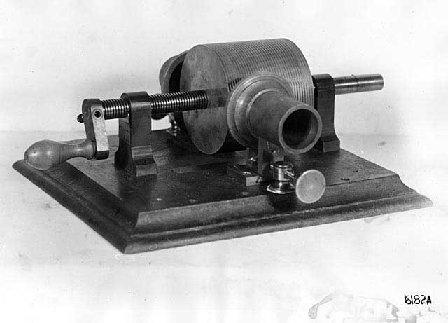

Music is everywhere. With the advent of digital music, the iPod, streaming services and more, music has the opportunity to be with us more often and in more ways. We listen at home, in our cars on our way to work, on headphones walking down the street... we are always listening to music. How did we get to this point? How did listeners consume their music before the modern day conveniences we have today? This website is intended to answer these questions and showcase the music formats of yore, in all of their glory.
Phonograph
Invented: August 12, 1877
Inventor: Thomas Edison
Features
Size: Standard-sized cylinders tended to be 4.25" long and 2.1875" in diameter.
Portability: Meant for home usage and not extremely portable
Capacity: Early wax cylinder had a length of only 2 minutes.
Music was not a the first application Thomas Edison had in mind when he invented the Phonograph in 1877. He thought the device would be most useful for "letter-writing and other forms of dictation, books, education, reader, music, family record." Although a music player was on his list of possible uses for this device, he saw it being used as a Dictaphone, talking book, or an answering machine as we know these devices today.

The original Edison tin foil phonograph
The first recording was made by Thomas Edison as he recited the words of "Mary Had a Little Lamb" on December 6th, 1877. Unfortunately, the recording made that day no longer exists. The earliest known recording of Thomas Edison't voice is "Speaking to Mr. Blaine" made in 1888.
Speaking to Mr. Blaine
The earliest known recording of Thomas Edison's voice (1888)
In 1897, the Edison Standard Phonograph was manufactured and marketed to consumers for only $20 (a significant price drop from phonographs that previously cost $150). Marches, sentimental ballads, coon songs, hymns, comic monologues, and more were made available for consumption at home for the first time ever. Before the phonograph, the only way to experience these types of entertainment was to see them live. The phonograph allowed consumers to bring performances home and revolutionized the way we consume entertainment.

"I want a phonograph in every home."